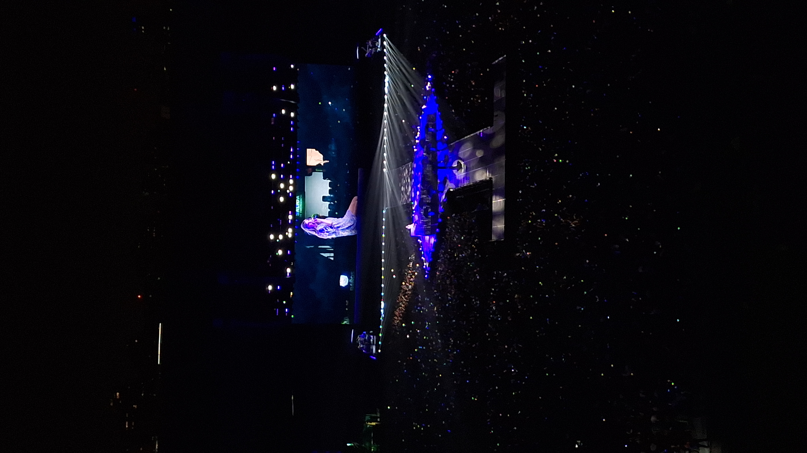

|
12 de Noviembre, 2024 Ignacio Rodriguez Costantini  |
Recordando el Año Pasado: Taylor Swift en ArgentinaHa pasado exactamente un año desde que Taylor Swift deslumbró a miles de fans argentinos con su espectáculo en Buenos Aires. El 12 de noviembre de 2023, el Estadio Monumental fue testigo de uno de los conciertos más esperados en la historia de la música pop en el país. Aquel día, una multitud emocionada se reunió para ver a su ídola en persona, muchos de ellos con carteles, pancartas y vestimentas inspiradas en las letras y los videos de Taylor. Para muchos, el concierto fue más que un simple show: fue un sueño hecho realidad. Después de años de esperar, finalmente la artista estadounidense se presentaba en suelo argentino, trayendo consigo su energía, sus letras sinceras y esa capacidad única de conectar con cada persona en la audiencia. Con cada canción, Taylor hacía que cada fan se sintiera visto, escuchado y comprendido. La noche estuvo llena de momentos inolvidables. Taylor interpretó éxitos de sus diferentes álbumes, desde *Love Story* hasta *All Too Well*, pasando por *Shake It Off* y *Blank Space*. La mezcla de canciones antiguas y nuevas hizo que el concierto fuera una celebración de toda su carrera, y los fans respondieron con una energía indescriptible. Cada canción era acompañada por un coro de voces que cantaban al unísono, creando una atmósfera mágica que aún resuena en los corazones de quienes asistieron. Pero más allá de la música, lo que muchos recordarán siempre fue la forma en que Taylor interactuó con sus fans. Conocida por su cercanía y su aprecio genuino hacia su público, Taylor no dudó en expresar su amor por Argentina y sus seguidores. Durante el concierto, dedicó palabras de agradecimiento y admiración, mencionando lo especial que era finalmente estar en el país y cómo cada uno de los asistentes hacía que esa noche fuera inolvidable. Un año después, los recuerdos de aquella noche siguen vivos. Los videos y fotos del concierto todavía circulan en las redes sociales, y cada vez que alguien escucha una de las canciones que Taylor interpretó en vivo, revive la emoción de estar allí, de sentir la vibración del estadio y de formar parte de un momento histórico. Los fans recuerdan con nostalgia ese 12 de noviembre, un día que marcó un antes y un después en su relación con la música de Taylor. La presencia de Taylor en Argentina no solo dejó una huella en sus seguidores, sino también en la cultura pop del país. Desde aquel concierto, las reuniones de fans y los eventos en honor a su música se han multiplicado. Para muchos, Taylor Swift se ha convertido en un símbolo de inspiración y fuerza, y su paso por Buenos Aires solo reafirmó el impacto de su arte en personas de todas las edades. Al cumplirse un año de su concierto, los swifties argentinos sueñan con el día en que Taylor regrese al país. Con una trayectoria imparable y un amor evidente hacia su público, no cabe duda de que, cuando ese momento llegue, será recibido con la misma pasión y emoción que en aquel noviembre de 2023. Hasta entonces, los recuerdos y la música de Taylor seguirán acompañando a cada uno de sus fans en Argentina, recordándoles la noche mágica en la que la artista más importante de su generación iluminó Buenos Aires. |